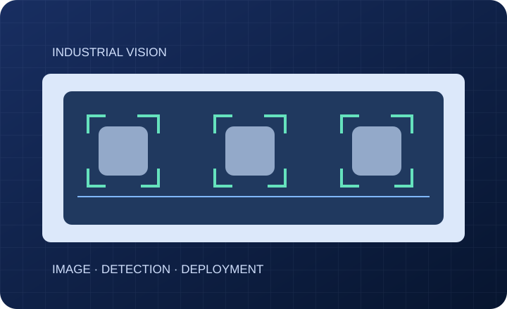

Comprendre.
Apprendre.
Construire.
Je suis Mohamed, data scientist et ingénieur généraliste. Des fondements mathématiques à l’IA sur le terrain, mon parcours se construit en apprenant par la pratique.
Ma façon de travailler ↗ Suivre mon parcours ↓Ma façon de travailler.
Chaque tour fait émerger une nouvelle question.
L’IA à l’épreuve
du réel.
Des caméras industrielles aux documents financiers : comprendre le besoin, construire le système et apprendre de son usage.


SCOR · Data Science
Stage de fin d’études · ParisJ’ai travaillé avec les équipes métier et techniques pour suivre la qualité d’extraction en production. L’automatisation des contrôles dans Databricks a rendu les évaluations reproductibles et facilité l’analyse des erreurs sur les champs prioritaires.
Databricks Workflows · Python · GitLab
Comprendre la mission
Le contexte
Une fois le pipeline d’extraction utilisé, sa qualité doit être suivie dans le temps. Les champs prioritaires et les erreurs doivent être compréhensibles par les équipes métier comme par les équipes techniques.
Ma contribution
J’ai travaillé sur des contrôles reproductibles de qualité d’extraction dans Databricks, analysé les erreurs et discuté des résultats avec mes collègues métier et techniques.
Ce que j’en retiens
Le suivi et l’analyse des erreurs font partie de la construction d’un système d’IA. Ils permettent de transformer les retours en améliorations concrètes.

SCOR · Intelligence documentaire
Stage en data science · ParisJ’ai comparé OCR, parsers Python et modèles vision-langage sur des tableaux financiers complexes. Sur notre évaluation d’extraction, la précision est passée d’environ 20 % à 88 %.
Python · OCR · GPT-4 Vision
Comprendre la mission
Le contexte
Les tableaux financiers complexes changent de structure et contiennent des informations dont le sens dépend du document. Extraire un nombre ne suffit pas : il faut le rattacher à la bonne transaction.
Ma contribution
J’ai comparé OCR, parsers Python et modèles vision-langage, en échangeant avec les équipes métier pour comprendre les informations attendues et examiner les erreurs d’extraction.
Le résultat et son contexte
Sur notre évaluation d’extraction, la précision est passée d’environ 20 % à 88 %. Ce résultat concerne la tâche d’extraction évaluée, et non une performance générale du modèle.


OPmobility · Vision industrielle
Stage en data science · VenetteJ’ai préparé des jeux d’images, entraîné des modèles de détection et de classification dans Databricks, puis déployé un modèle de détection sur une caméra industrielle Cognex pour le contrôle en fin de ligne.
Databricks · MLflow · YOLO · Cognex ICAM520
Comprendre la mission
Le contexte
Le contrôle en fin de ligne doit vérifier des pièces physiques dans un environnement de production. Les données, la tâche de détection et la caméra industrielle déterminent ce qui peut être déployé.
Ma contribution
J’ai préparé les jeux d’images, entraîné des modèles de détection et de classification dans Databricks, comparé leur comportement et déployé un modèle de détection sur une caméra Cognex ICAM520.
Ce que j’en retiens
Le déploiement relie les modèles au matériel et aux images réelles. Tester dans l’environnement prévu compte autant que l’évaluation des résultats d’entraînement.
D’un apprentissage
au suivant.
Suivez le chemin. Chaque lieu a fait évoluer ma manière d’aborder les problèmes.
Illustrations inspirées du parcours.
Réfléchir avant de construire.
En prépa à Fès, j’ai appris à raisonner face à un problème. À Centrale Casablanca, j’ai appris à me demander qui le vivait. Mon premier projet d’ingénieur a commencé avec cinq étudiants devant un carrefour encombré.
Aujourd’hui, je travaille à la croisée de la data science, de l’ingénierie IA et de l’optimisation. J’aime les échanges avec un expert métier qui changent la question, puis le moment où l’on vérifie si la solution fonctionne réellement.
Mes outils de travail.
Découvrez leur rôle concret dans mes travaux.
Là où j’ai appris.
École Centrale Casablanca
Diplôme d’ingénieur généraliste, option Sciences des Données et Décision. Apprentissage statistique, recherche opérationnelle et aide à la décision.
CentraleSupélec
Semestre d’échange à Paris-Saclay. Modélisation mathématique et aide à la décision, appliquées notamment à la planification de techniciens et à la recherche sismique.
Classes préparatoires · Moulay Driss
Deux années intensives de mathématiques, de physique et de sciences de l’ingénieur à Fès, au Maroc.
Des questions devenues
des projets.
Découvrez le contexte, la démarche et l’apprentissage derrière chaque projet.
Mon CV.
En anglais · Une page · Édition de septembre 2026
Continuer à apprendre.
Google Project Management
Google · Coursera
Generative AI with Large Language Models
Coursera
Modeling Software Systems using UML
Modélisation de systèmes logiciels